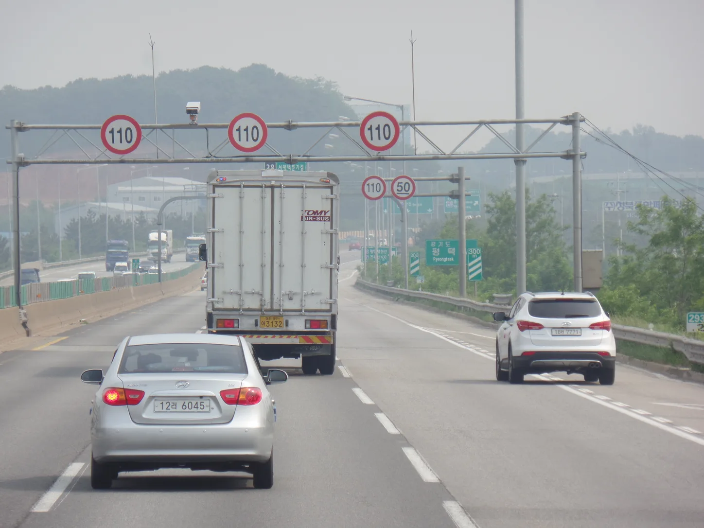
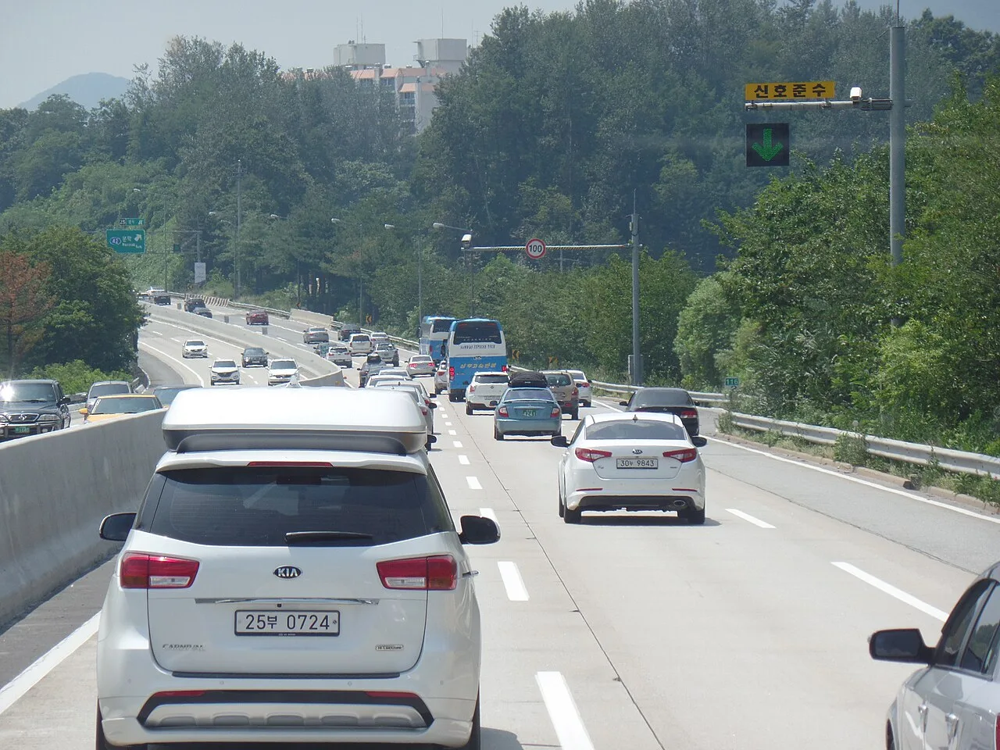
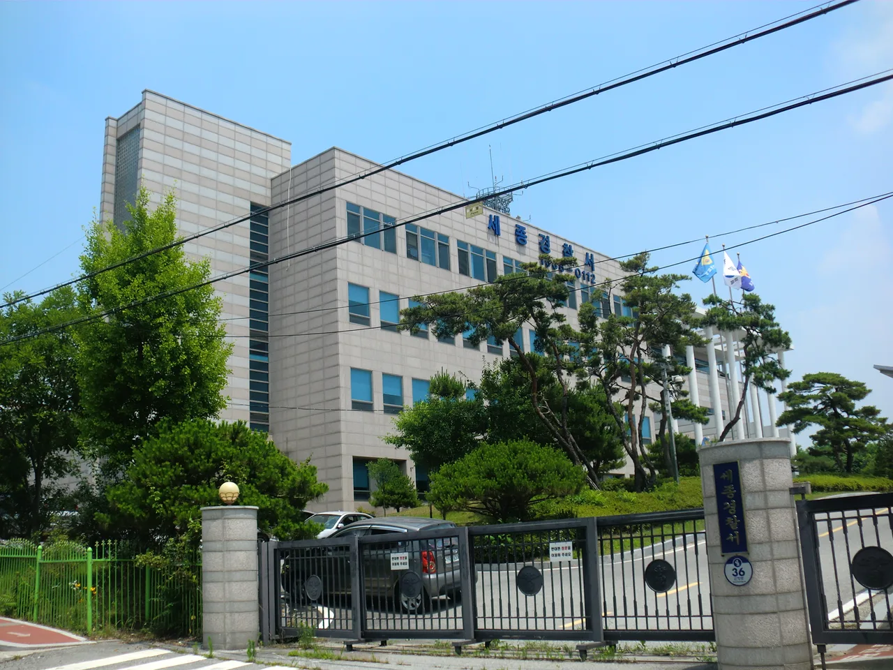
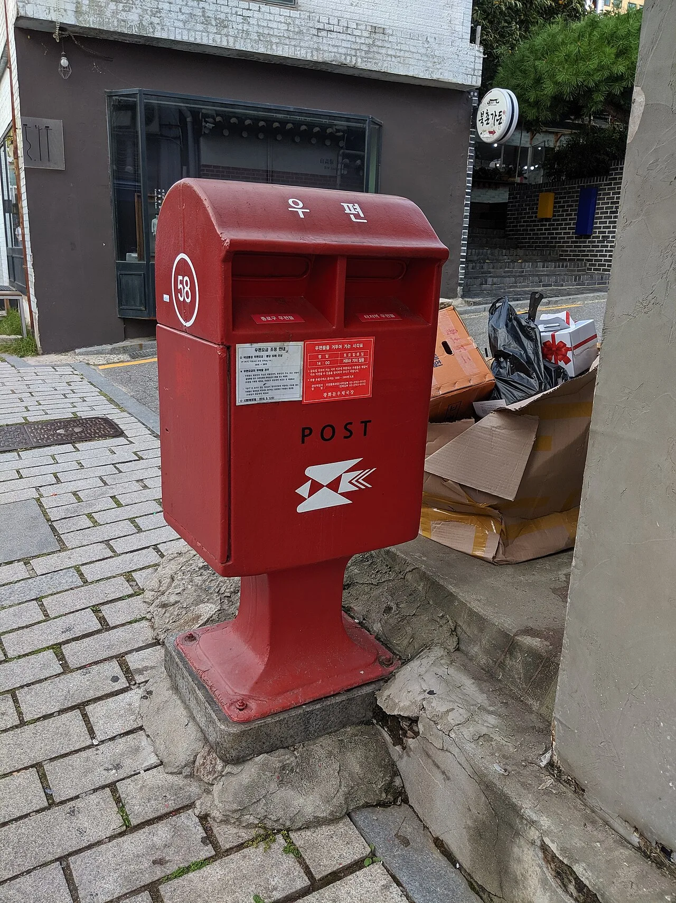

▲ 고속도로 전광판 옆에 달린 무인단속카메라 — 여기 찍히면 과태료, 경찰관에게 현장에서 적발되면 범칙금이다 ⓒ Wikimedia Commons
무인카메라에 찍힌 과속·신호위반 과태료 고지서, 억울해도 그냥 낼 수밖에 없다고 생각하는 운전자가 많다.
하지만 모든 과태료가 100% 확정된 처분은 아니다. 운전자를 특정할 수 없는 경우, 실제 운전자가 따로 있는 경우, 단속 자체에 오류가 있는 경우라면 이의신청을 통해 다퉈볼 여지가 있다.
문제는 기한이 정해져 있고, 이의신청을 잘못 이해하면 오히려 가산금만 붙는 결과로 이어질 수 있다는 점이다. 범칙금과 과태료의 차이부터 실제 신청 절차, 2026년 기준 유의사항까지 정리했다.
1. 범칙금과 과태료, 뭐가 다른가
둘 다 교통법규 위반에 물리는 돈이지만 부과 방식과 근거가 다르다. 헷갈리는 이유는 같은 위반이라도 단속 방식에 따라 둘 중 하나로 갈리기 때문이다.
| 구분 | 범칙금 | 과태료 |
|---|---|---|
| 부과 방식 | 경찰관이 현장에서 직접 적발 | 무인단속카메라 등으로 적발, 운전자 미특정 |
| 부과 대상 | 실제 운전자 본인 | 원칙적으로 차량 명의자(소유자) |
| 벌점 | 위반 종류에 따라 부과될 수 있음 | 부과되지 않음 |
| 법적 성격 | 형사처벌(즉결심판 등)의 성격 | 행정질서벌 — 형벌 성질이 아님 |
| 금액 | 대체로 과태료보다 낮은 편 | 범칙금보다 다소 높은 편(벌점 대신) |
📍 과태료가 범칙금보다 비싼 이유
같은 위반이라도 과태료 쪽 금액이 범칙금보다 조금 더 높게 책정된다. 범칙금은 벌점이 함께 부과되는 대신 금액이 낮고, 과태료는 벌점이 없는 대신 금액이 더 높은 구조다. 그래서 고지서를 받으면 기한 내에 자진납부(범칙금 전환)를 선택할 수 있는 경우도 있는데, 이때는 벌점을 감수하는 대신 금액을 낮출 수 있다.
📍 범칙금 통고처분은 애초에 "행정소송" 대상이 아니다
대법원은 일찌감치 경찰서장의 범칙금 통고처분에 대해 "행정소송의 대상이 되는 행정처분이 아니다"라고 판시했다(대법원 1995. 6. 29. 선고 95누4674 판결, 범칙금부과처분취소). 범칙금에 이의가 있으면 소송을 내는 게 아니라 납부 자체를 거부해 경찰서장의 즉결심판 청구를 받는 방식으로 다퉈야 한다는 취지다. 반면 이 기사가 다루는 과태료 이의신청은 질서위반행위규제법에 따라 서면 이의제기 → 법원 통보 → 과태료 재판으로 이어지는 별개의 절차이니 혼동하지 않아야 한다.

▲ 영동고속도로 문막IC 인근의 무인단속카메라 — 여기서 적발되면 운전자가 아닌 차량 소유자에게 과태료가 나간다 ⓒ Wikimedia Commons
2. 이의신청이 가능한 경우 — 이런 때는 다퉈볼 만하다
이의신청이 아무 때나 받아들여지는 건 아니다. 단순히 "억울하다"는 주장만으로는 결과가 바뀌기 어렵고, 객관적인 근거가 있어야 한다.
✅ 이의신청을 검토해볼 만한 경우
· 운전자가 따로 있음을 입증할 수 있는 경우 — 가족·지인에게 빌려준 차량, 회사 법인차량 등으로 실제 운전자가 밝혀지면 과태료가 취소되고 그 운전자에게 범칙금이 부과되는 방식으로 전환될 수 있음
· 렌터카(대여차량)인 경우 — 차량이 자동차대여사업자가 대여한 것이 명백하면 대여사업자가 실제 운전자 정보를 제공해 과태료 대상이 바뀔 수 있음
· 응급환자 이송·화재·재난 대응 등 정당한 사유가 있었던 경우 — 블랙박스, 병원 기록 등 객관적 증거 필요. 대법원도 행정질서벌 일반 법리로 "의무 해태를 탓할 수 없는 정당한 사유가 있을 때는 부과할 수 없다"고 판시한 바 있다(대법원 2000. 5. 26. 선고 98두5972 판결, 과태료등부과처분취소 — 다만 이 판례 자체는 수도요금 관련 사안으로 교통 과태료 사건은 아니며, "정당한 사유" 항변의 법리적 근거로만 인용된다)
· 단속 장비 오류·표지판 문제 — 규정 속도 표지가 가려져 있었거나, 신호기 고장 등이 확인되는 경우
· 차량을 이미 매도·양도한 뒤 발생한 위반인데 명의이전이 늦어 예전 소유자에게 고지서가 온 경우
📍 "그냥 억울하다"는 통하지 않는다
법률정보 안내에 따르면 이의신청이 접수되면 행정청의 과태료 부과 처분은 일단 효력을 잃고 사건이 법원으로 넘어간다. 하지만 뚜렷한 증거 없이 단순 항변만 하면 법원 재판에서 다시 기각되고, 가산금까지 추가로 붙는 결과로 이어질 수 있다. 이의신청은 "밑져야 본전"이 아니라 증거가 있을 때 선택하는 절차다.
3. 이파인으로 이의신청하는 절차
이의신청은 경찰청 교통민원24(이파인, efine.go.kr)에서 온라인으로 진행할 수 있고, 관할 경찰서에 서면으로 직접 제출·우편 발송하는 것도 가능하다.
| 단계 | 내용 |
|---|---|
| ① 로그인 | efine.go.kr 접속 후 공동인증서·간편인증으로 본인 확인 |
| ② 단속 내역 조회 | "교통범칙금·과태료" 메뉴에서 본인 명의 고지 내역 확인 — 단속 일시·장소·사진 열람 가능 |
| ③ 이의(의견) 제기 | "교통법규위반 사실확인요청" 또는 이의신청 메뉴에서 사유 작성 + 증거자료(사진·블랙박스 영상 등) 첨부 |
| ④ 접수·검토 | 행정청(경찰서)이 접수 후 내부 검토, 필요 시 보완 요청 |
| ⑤ 법원 통보 | 이의가 받아들여지지 않으면 행정청은 접수일로부터 14일 이내 관할 법원에 증빙·의견과 함께 통보 |
| ⑥ 과태료 재판 | 법원이 약식재판 또는 정식재판으로 최종 판단 — 이 결정에도 불복하면 재판 고지를 받은 날로부터 7일 이내 추가 이의신청 가능 |
단속 내역 조회와 이의신청은 이파인 홈페이지에서 바로 진행할 수 있다. 이파인 바로가기

▲ 온라인(이파인)이 아니라도 관할 경찰서를 직접 방문하거나 우편으로 이의신청 서류를 제출할 수 있다 ⓒ Wikimedia Commons

▲ 과태료·범칙금 고지서는 통상 우편으로 발송된다 — 수령일이 곧 이의신청 60일 기산의 기준이다 ⓒ Wikimedia Commons
4. 기한과 유의사항 — 60일 지나면 확정된다
✅ 꼭 지켜야 할 기한
· 이의신청: 과태료 부과 통지를 받은 날부터 60일 이내, 서면으로 제기 — 기한을 넘기면 과태료가 그대로 확정됨
· 법원 약식재판에 대한 불복: 재판 고지를 받은 날부터 7일 이내 이의신청
· 이의신청 철회: 행정청으로부터 법원 통보 사실을 통지받기 전까지만 서면으로 철회 가능
📍 60일을 그냥 흘려보내는 경우가 의외로 많다
2026년 보도에 따르면, 상당수 운전자가 정당한 사유가 있었는데도 그냥 납부부터 하고 넘어가는 경우가 적지 않다. 응급환자 이송, 차량 고장으로 인한 비상 정차, 도로 공사로 인한 우회 등이 대표적인데, 납부 후에는 이의신청 실익이 크게 줄어든다. 고지서를 받으면 우선 60일 기한부터 확인하고, 이의를 제기할지부터 판단하는 것이 순서다.
가산금도 챙겨야 할 변수다. 기한 내 납부하지 않은 채 시간이 지나면 체납 가산금이 붙고, 이의신청이 법원에서 기각되어도 마찬가지로 가산금이 추가될 수 있다. 근거 없는 이의신청을 남발하면 시간만 끌다가 더 비싸게 내는 결과로 이어질 수 있다는 뜻이다.
5. 실제로는 어떻게 갈릴까 — 인용·기각의 갈림길
같은 "이의신청"이라도 결과는 근거의 유무에서 갈린다. 실제 사례 유형을 인용(받아들여짐)과 기각(받아들여지지 않음)으로 나눠 정리하면 다음과 같다.
| 결과 | 대표 사례 유형 |
|---|---|
| 인용에 가까운 경우 | 렌터카·법인차량 등 실제 운전자가 서류로 특정되는 경우 — 과태료가 취소되고 해당 운전자에게 범칙금으로 전환 |
| 인용에 가까운 경우 | 차량을 이미 매도했음을 계약서·명의이전 기록으로 증빙하는 경우 |
| 인용에 가까운 경우 | 단속 장비 오류·표지판 결함이 관할 기관 확인으로 인정되는 경우 (드묾) |
| 기각에 가까운 경우 | "몰랐다", "바빠서 어쩔 수 없었다" 등 객관적 증거 없는 단순 항변 |
| 기각에 가까운 경우 | 이미 납부를 완료한 뒤 뒤늦게 제기 — 납부 시점에 불복 의사가 없었던 것으로 간주되기 쉬움 |
| 기각에 가까운 경우 | 60일 기한을 넘겨 과태료가 이미 확정된 경우 |
▲ 이의신청이 받아들여지지 않으면 사건은 관할 법원의 과태료 재판으로 넘어간다 ⓒ Wikimedia Commons
📍 "운전자 특정"이 가장 흔한 인용 사유다
실무적으로 가장 많이 받아들여지는 유형은 운전자를 특정해 범칙금으로 전환하는 경우다. 도로교통법상 위반행위자가 밝혀지면 차량 명의자에 대한 과태료 부과는 취소되고, 실제 운전자에게 범칙금(및 해당 시 벌점)이 부과되는 구조로 정리된다. 다만 이 경우도 벌점이 새로 붙는다는 점은 감안해야 한다 — 무조건 유리한 결과는 아니다.
6. 요약
범칙금은 현장에서 운전자를 특정해 부과되고(벌점 있음), 과태료는 무인카메라 등으로 운전자를 특정하지 못할 때 차량 소유자에게 부과된다(벌점 없음). 같은 위반이라도 단속 방식에 따라 둘 중 하나로 갈린다.
과태료 고지서를 받은 날로부터 60일 이내라면 경찰청 교통민원24(이파인)에서 온라인으로, 또는 관할 경찰서에 서면으로 이의신청이 가능하다. 신청이 접수되면 기존 처분 효력은 상실되고 사건은 법원 재판으로 넘어간다.
실제 운전자가 따로 있거나(렌터카·법인차량 포함), 차량을 이미 매도했거나, 단속 장비·표지판에 결함이 있었던 경우라면 다퉈볼 만하다. 반대로 단순히 억울하다는 항변뿐이거나 이미 납부를 마친 뒤라면 받아들여지기 어렵고, 근거 없는 이의신청은 가산금만 더하는 결과로 이어질 수 있다.